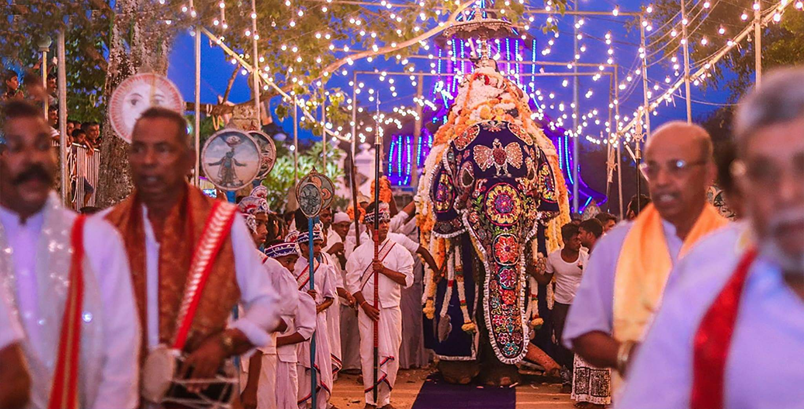

sea side south park Resort sits on a rocky outcrop on the southern coast of
Sri Lanka near the old town of dondra( dewundar).
Golden-hued beach fringed
by coconut palms overlooks the roaring Indian Ocean.
Upcoming Festival
Devinuwara Esala Festival
 The Esala Festival of the Siri Vishnu Devalaya, Devinuwara will be held from August 8 to 23.
The first perahera will parade the streets on August 8 and the second on August 9.
Others will
be held on August 10, 11, 12. and 13. The final Randoli perahera will be held on August 14.
The deva
tovilaya and kolemurayagaya will be held on August 22 and the deva danaya (almsgiving) will be held
on August 23.
Other Historical Places
Dondra Lighthouse

Dondra Head Lighthouse is a lighthouse located on Dondra Head, Dondra,
the southernmost point in
Sri Lanka and is Sri Lanka's tallest lighthouse and also one of the tallest in South East Asia.
Dondra Head lighthouse is operated and
maintained by the Sri Lanka Ports Authority.
The lighthouse is near the village of Dondra, and is approximately
6 km (3.7 mi) southeast of Matara.
The name Dondra is a synonym for "Devi-Nuwara" in the local Sinhala language,
"Devi" meaning "Gods" and "Nuwara" meaning "City". D
ondra is therefore derived to mean "City of the Gods".
Galle Fort

Galle Fort in the Bay of Galle on the southwest coast of Sri Lanka, was built first in 1588 by the Portuguese,
then
extensively fortified by the Dutch during the 17th century from 1649 onwards.
It is a historical, archaeological and architectural
heritage monument, which even after more than 432 years maintains a polished appearance,
due to extensive reconstruction work
done by Archaeological Department of Sri Lanka.
The fort has a colourful history, and today has a multi-ethnic and multi-religious population.
The Sri Lankan government and many Dutch people who still own some of the properties inside the fort are looking at making this
one of the modern wonders of the world.
The heritage value of the fort has been recognized by the UNESCO and the site has been inscribed as a
cultural heritage UNESCO World Heritage Site under criteria iv,
for its unique exposition of "an urban ensemble which illustrates the interaction of European
architecture and South Asian traditions from the 16th to the 19th centuries."
The Galle Fort, also known as the Dutch Fort or the "Ramparts of Galle", withstood the
Boxing Day tsunami which damaged part of coastal area Galle town.
It has been since restored.